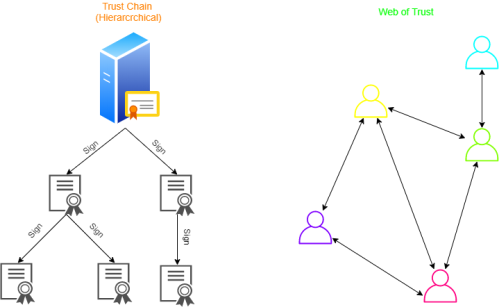
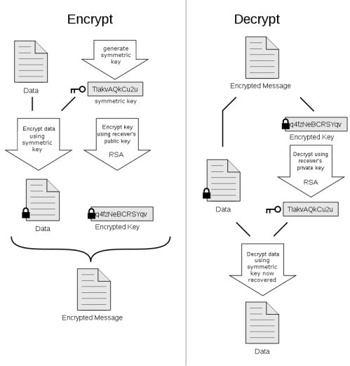

Pretty Good Privacy (PGP)
PGP is a program used to encrypt files, encrypt emails, apply
digital signature and enforce integrity. Phil Zimmermann developed PGP in 1991.
PGP and other similar
products follow the OpenPGP standard (RFC 4880) which describes the formats for encrypted messages, keys, and
digital signatures.
GnuPG (or gpg) for example is open-source GPL implementation of this standard and is the
usual implementation found on GNU/Linux systems
Web of Trust model
PGP use
decentralized model called “
Web of Trust” that is an alternative to the centralized model “
Trust Chain”(hierarchical) used for example by SSL that is based on the Public Key
Infrastructure (PKI), which relies exclusively on a certificate authority
Contents of a typical
PGP
Key(
similar
to those of X.509 certificate):
◇
Serial Number → used
to uniquely identify the key
◇
Subject → owner of the
key
◇
Purpose → for what the key is to be used for (E.G., For
signing; for encryption)
◇
Algorithm → ElGamal, RSA,
DSA...
◇
Valid-To → The expiration date
Keyring file
The PGP software store inside a file called
keyring:
◇ our
private key (this will be stored encrypted with a passphrase)
◇
our
public key (not protected)
◇
public keys of other people's which are trusted by
us
PGP Digital Signature
PGP can sign:
◇ the document
◇ the hash version of the document
▪ more
efficient(only 160 bits to sign)
▪ can be represented easily in HEX(only 160bits)
PGP encrypt & decrypt
Algorithms used by PGP
◇ 3DES, IDEA,
CAST-128 → for symmetric-key encryption
▪ the symmetric key is not shared before but the recipient will have
to recover it with the private key in his possession
◇ RSA, DSS, Diffie-Hellman → for public-key
encryption
◇ SHA-1 → for hashing
◇ ZIP → for
compression
Bibliography:
PGP encryption:
https://en.wikipedia.org/wiki/Pretty_Good_Privacy
{kind=link}